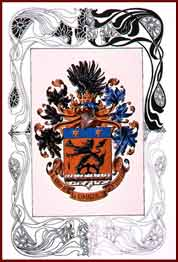

|  | |||
| By the 1910s, Manfréd Weiss’ armaments factory in Csepel had become one of the largest in the Austro-Hungarian Monarchy. Manfréd Weiss was raised to noble rank in 1896; he received the title of baron in 1918, and was a member of the Upper House of the Parliament. He was a generous supporter of Jewish charity organizations. | |||